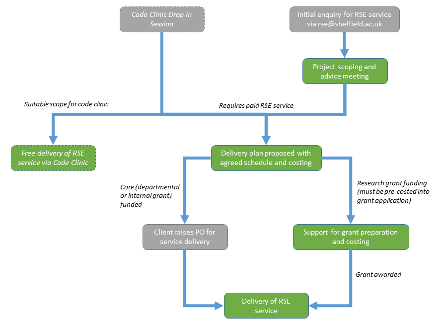

RSE Service Provision
Initial enquiries for RSE service should be made by first contacting us. If you attend one of our code clinics you may also be refereed through to the paid service for dedicated help if this is something which is required.
During your initial consultation a senior member of the RSE team will provide guidance on the RSE service and discuss your needs. If your project is within scope of what we can help with then we will work with you to agree a delivery plan. As part fo this we can assist wit relevant parts of grant writing (such as justification of resources and software delivery plans). Please see the flow chart below for our service provision model.
RSE line management
Once an RSE has been allocated to you then you will provide day to day line management of the staff member for the allocated time of the project. A senior RSE will have already assisted you in the specification of the work schedule during the grant writing stage. If you need more dedicated involvement of a senior RSE then consider making one our our senior RSEs a collaborator in your grant. They will then be able to provide additional intellectual guidance for your project and any RSE staff members during the delivery stage.
If at any stage you need to change direction within your grant or are unhappy with the staff member then this should be raised with the senior RSE member who assisted you in grant preparation or in designing the work schedule.
Provision of RSE group members
Once your grant is funded we will agree appropriate staffing to meet your needs and review this as necessary. Most UKRI funders are aware of the role of RSEs and actively encourage their deployment on grants. Some funders (e.g. Leverhulme) require a C.V. to be submit. We can arrange this for you during grant submission.
